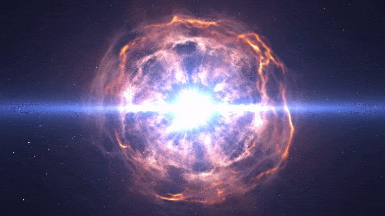
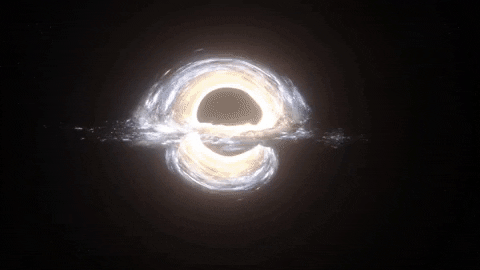
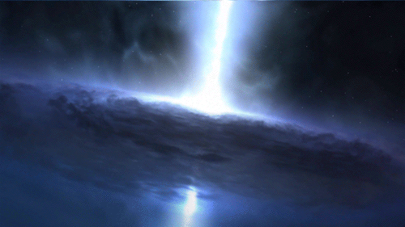

Supernova
Når en stor stjerne går tom for drivstoff, kollapser den og eksploderer. Eksplosjonen kan lyse sterkere enn en hel galakse i flere uker.

Når en stor stjerne går tom for drivstoff, kollapser den og eksploderer. Eksplosjonen kan lyse sterkere enn en hel galakse i flere uker.

Etter en supernova kan kjernen bli så tung at ingenting slipper ut, ikke engang lys. Grensen der det ikke finnes noen vei tilbake kalles hendelseshorisonten.

Når et supermassivt svart hull sluker enorme mengder gass, blir gassen så varm at den lyser. En quasar kan være tusen ganger sterkere enn hele Melkeveien.